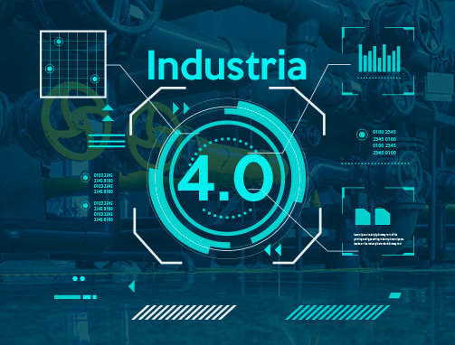

|
|
|
As vantagens da Indústria 4.0
É de se esperar que a Quarta Revolução Industrial proporcione diversos benefícios para as empresas de manufatura.
Confira, nos próximos tópicos, as principais vantagens que as mudanças podem trazer para os negócios:
|
|
|
|
• Aumento da produtividade: O investimento em tecnologia permite que diversos
processos sejam automatizados, trazendo mais agilidade e precisão em sua execução.
• Ganho em eficiência: Na Indústria 4.0, os recursos empresariais são utilizados com
mais inteligência, além do ganho em agilidade e redução de erros na execução dos processos.
• Redução dos custos de produção: Na Indústria 4.0, as máquinas têm maior capacidade de
autonomia na execução dos processos ou mesmo na programação de rotinas de manutenção.
• Continuidade dos negócios na manufatura avançada: A manufatura avançada tem como base a
inovação tecnológica e a busca pela redução de custos, estratégias diferenciadas de produção
digital.
• Operações integradas: A promoção das chamadas fábricas inteligentes também é outra grande vantagem
da Indústria 4.0.
|
|
|
|
Desvantagens
Assim como existem várias vantagens na evolução para a Indústria 4.0,
existem também alguns desafios que devem ser superados. Conheça os principais nos próximos tópicos:
|
|
|
|
|
|
• Dificuldade para encontrar mão de obra capacitada: As empresas precisarão garantir que seus funcionários tenham as
habilidades necessárias para lidar com novas tecnologias e formas de trabalho.
• Desemprego: A falta de mão de obra capacitada para lidar com as novas tecnologias
(e a resistência à mudanças) pode gerar uma onda de desemprego.
• Ciberataques: Também se pode esperar problemas de segurança, à medida que mais dispositivos são conectados à Internet.
A cada novo ponto de acesso, uma nova vulnerabilidade surge.
• Utilização das tecnologias para fins escuros: Outra grande preocupação está em como a tecnologia será utilizada no mercado.
Ao mesmo tempo em que ela pode ser implementada com a intenção de otimizar os processos industriais, pessoas mal intencionadas
também podem adotá-las com a intenção de prejudicar organizações e outras pessoas.
|
|
|
|
O que pode mudar com a chegada da indústria 4.0
A Quarta Revolução Industrial já nos faz esperar por uma grande disrupção — tanto na forma como os processos são
geridos quanto na utilização de novas tecnologias. Porém, não para por aí.
Conheça as outras mudanças que podem acontecer nesse processo de evolução.
|
|
|
 |
|
• Descentralização das decisões: As decisões não serão mais tomadas apenas por um gestor. Com o aumento do controle das informações
e o acesso a diversos dados da operação em tempo real, os líderes e os
próprios colaboradores terão mais autonomia para definir algumas questões.
• Incorporação de novas habilidades: Como dito, as novas tecnologias e a mudança nos paradigmas faz com que os
profissionais tenham que se atualizar para se manterem no mercado.
• Automatização dos processos: Além dos sistemas já bastante conhecidos no mercado (como o ERP),
as empresas precisarão investir ainda mais na automatização de processos.
|
|
|
|